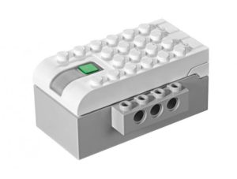
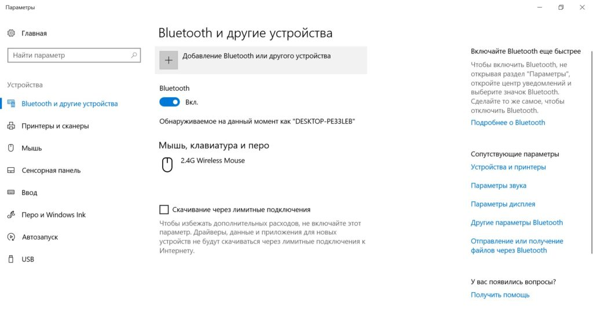
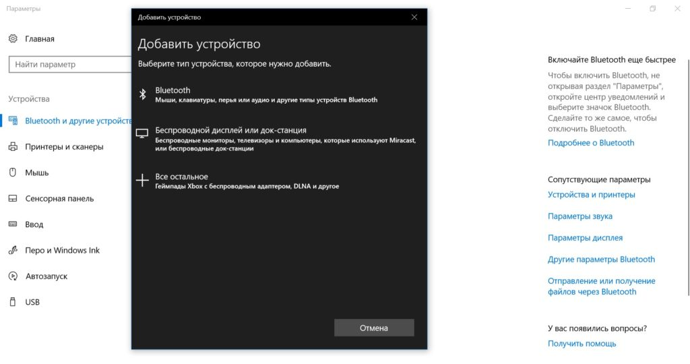
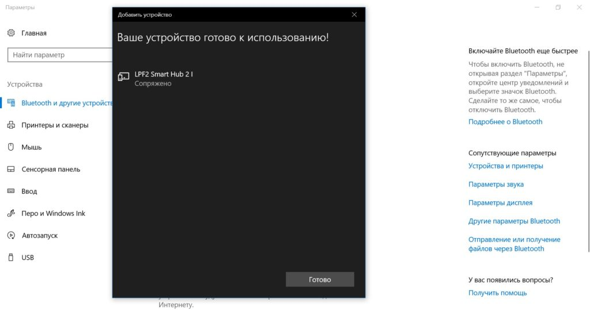
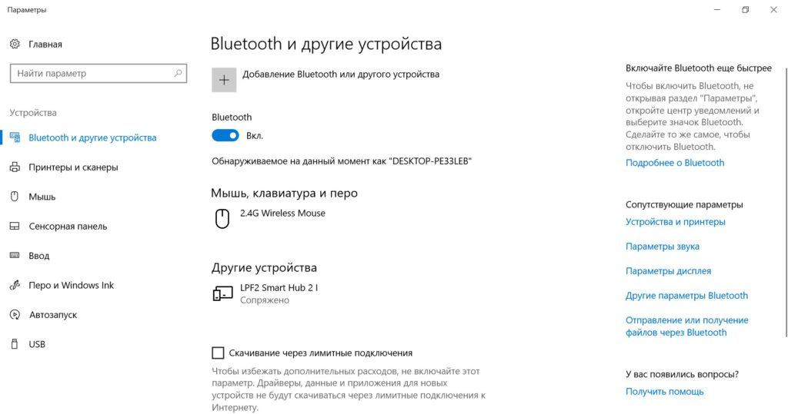
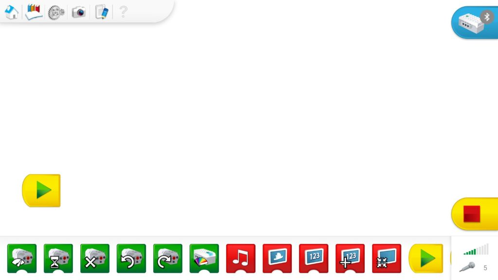
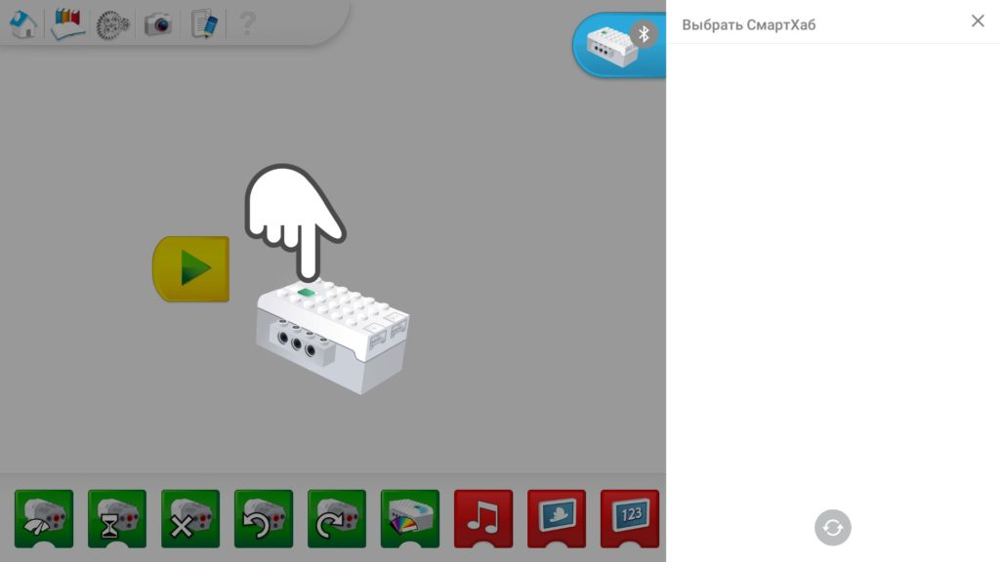
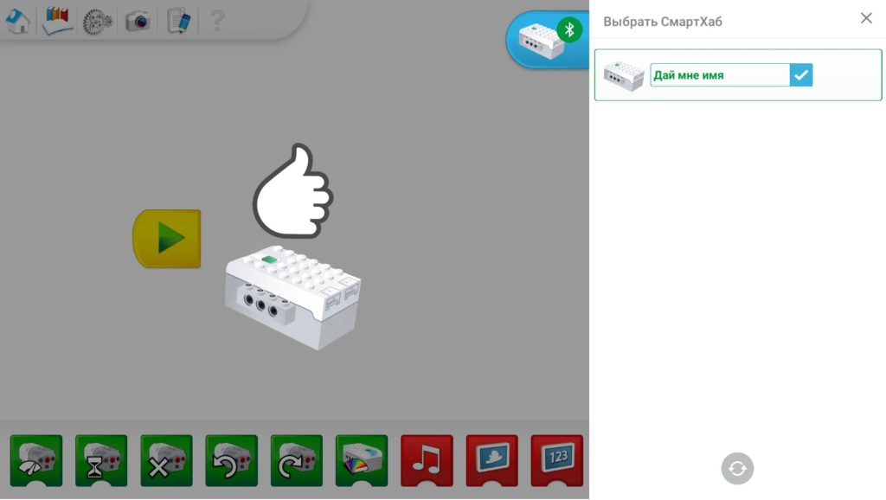
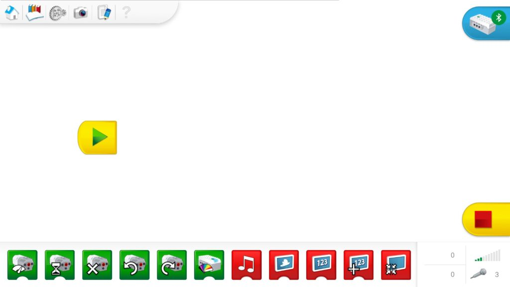

Программное обеспечение
Оригинальное программное обеспечение Lego WeDo 2.0 можно установить на устройства под управлением ОС Windows7, Windows 10, Android, iOS, Mac OS X. Последние версии приложений доступны для скачивания на официальном сайте Lego:
https://education.lego.com/en-us/downloads/retiredproducts/wedo-2/software
iPad
Инструкция по установке WeDo 2.0 на iPad
Android
- Если у Вас планшет, то установить приложение нужно из официального магазина Google Play по ссылке: Скачать WeDo 2.0 для Android
- Если у Вас телефон и в официальном магазине написано “устройство не
поддерживается“, то установить приложение можно из файла по ссылке: APK
файл для установки
Это та же самая программа, что и в официальном магазине, но в виде файла для ручной установки.
Windows
В случае, если у Вас возникли трудности с установкой на Windows из официального сайта в начале страницы, пожалуйста, скачайте ПО по ссылкам ниже:
Mac
Подключение Смартхаба
Одним из основных нововведений в образовательном наборе WeDo 2.0 стало внедрение технологии Bluetooth, что сделало модели роботов полностью автономными. Это стало возможным благодаря обновлению функционала центрального блока набора – смартхаба. Смартхаб (Smarthub) представляет собой интеллектуальный блок управления, к которому подключаются исполнительные устройства, такие как двигатели и датчики. В свою очередь, смартхаб соединяется с ноутбуком, компьютером или планшетом для получения команд управления. По сути, смартхаб является «сердцем» каждого робота.
С чего начать работу?
Сначала нужно обеспечить питание смартхаба, установив в него две батареи типа АА. Убедитесь в работоспособности батареек. Теперь смартхаб готов, и его можно отложить в сторону, чтобы перейти к настройке вашего устройства.
Так как смартхаб является Bluetooth-устройством – переходим в соответствующую панель настроек.
Жмём «+», чтобы добавить новое устройство Bluetooth.
Выбираем Bluetooth «Мыши, клавиатуры и др.типы устройств». Как только появляется диалоговое окно поиска новых устройств, нажимаем зеленую кнопку на смартхабе – он активируется и отправляет сигналы на приёмный Bluetooth модуль ноутбука.
Если на текущий момент все выполнялось правильно в окне поиска новых устройств отобразится смартхаб с именем «LPF2 Smart Hub 2 I/O». Выбираем появившийся смартхаб, в первый момент он переходит в режим «Подключено», а буквально через мгновение в режим «Связано» («Сопряжено»).
Жмём кнопку «Готово». В окне Bluetooth устройств должен появиться сопряженный с ноутбуком смартхаб.
Затем запускаем программу WeDo 2.0 и попадаем в главное окно программы. В правом верхнем углу находим символ смартхаба со значком Bluetooth и жмём на него.
Справа появляется окно поиска смартхабов, а слева визуальная инструкция необходимых действий: парящая в воздухе рука пытается нажать на зеленую кнопку смартхаба, что и нужно нам сделать. Смартхаб традиционно активируется и отправляет запрос ведущему устройству – ноутбуку.
Получив ответ, индикатор смартхаба загорится ярким синим цветом, что символизирует успешное подключение. Через несколько секунд подключенный смартхаб появится в диалоговом окне справа. А слева парящая рука покажет поднятый палец вверх «ОК».
В диалоговом окне мы можем узнать заряд батарей смартхаба, а также присвоить ему уникальное имя, чтобы не спутать с другими смартхабами при одновременном подключении. Делается это очень просто – нажимается иконка с карандашом – открывается режим редактирования имени смартхаба – вводим требуемое имя и жмём «ОК».
На этом подключение и настройка завершена! Самое время написать свою первую программу. Рекомендуем для этого посмотреть видео уроки или материалы из раздела "Книги".
